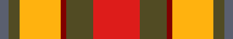

Pilot Information File: Engines
Basic Information
Pilot ID: ea2dca
Pilot Service: RN
Pilot Rank: Lt Cdr
Awards
| ID | Name | Issued | Ribbon |
|---|---|---|---|
| 4 | OP_TALON_1 | 13 Jan 24 |  |
| 5 | 50_HOURS | 13 Jan 24 |  |
| 6 | 100_HOURS | 13 Jan 24 |  |
| 7 | 250_HOURS | 13 Jan 24 |  |
| 9 | 50_TYPE_HOURS | 13 Jan 24 |  |
| 10 | 100_TYPE_HOURS | 13 Jan 24 | |
| 11 | 250_TYPE_HOURS | 13 Jan 24 | |
| 14 | CONTROLLER | 13 Jan 24 |  |
| 15 | OP_PULLMAN | 13 Jan 24 |  |
| 22 | OP_THRESHER_1 | 13 Jan 24 |  |
| 23 | OP_SHADER_1 | 14 Jan 24 |  |
| 26 | MISSION_MAKER | 13 Jan 24 |  |
| 27 | DIPLOMAT | 13 Jan 24 |  |
| 28 | AVIATION_AMBASSADOR | 13 Jan 24 |  |
| 29 | QUALIFIED_FLIGHT_INSTRUCTOR | 13 Jan 24 |  |
| 30 | QUALIFIED_WARFARE_INSTRUCTOR | 13 Jan 24 |  |
| 34 | SAR_PILOT | 13 Jan 24 |  |
| 38 | PLUGGED_IN_DAY | 13 Jan 24 | |
| 39 | PLUGGED_IN_NIGHT | 13 Jan 24 |  |
| 40 | GREY_HEART | 13 Jan 24 |  |
| 43 | DABBING_UNICORN | 14 Jan 24 |
Qualifications
No qualifications.
Logbook
Totals
Last Joined: 2024-01-15
Total hours: 357.2
Type Totals
| Type | Hours |
|---|---|
| AV8BNA | 272.3 |
| Mi-8MT | 23.9 |
| SA342L | 16.8 |
| SA342M | 10.8 |
| SA342Minigun | 7.9 |
| MiG-21Bis | 6.0 |
| SA342Mistral | 5.8 |
| T-45 | 4.3 |
| F-14A-135-GR RIO | 2.8 |
| T-45 Copilot | 2.2 |
| AH-64D_BLK_II | 2.1 |
| UH-1H | 1.3 |
| AH-64D_BLK_II Copilot | 1.0 |
Kills
| Category | Kills |
|---|---|
| Buildings | 18 |
| Planes | 39 |
| Ground Units | 197 |